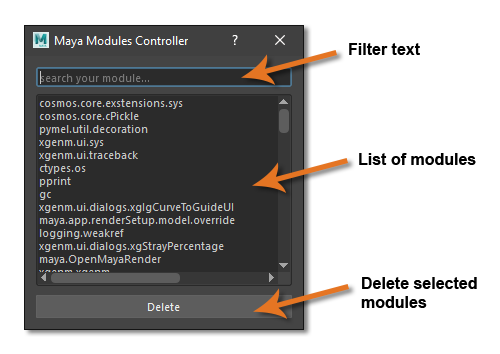

Quickstart¶
You don’t need to read all the API documentation if you are really impatien in getting this tool going. Take a look to the UI.
Here is how you can use this tool.
How to Launch¶
Inside Maya you can open a Python shell and copy the following code.
Note
Don’t forget to add the tool module path to your Python paths.
1 2 | import maya_module_controller
modules_controller = maya_module_controller.run(0)
|
Warning
Due to some Maya 2017 PySide2 weirdness you need too put the maya_module_controller inside a variable in order to have the Qt signals working. This will also allow you to edit the tool behavior with its API.
How to use it¶
User Interface¶
Maya Modules Controller has 3 main UI elements.
Filter Text¶
Use this to filter the Python Modules on the list.
Modules List¶
Contains a list of all modules returned by sys.modules.
Delete¶
Will do a del sys.module[module] on each selected module on the module list.